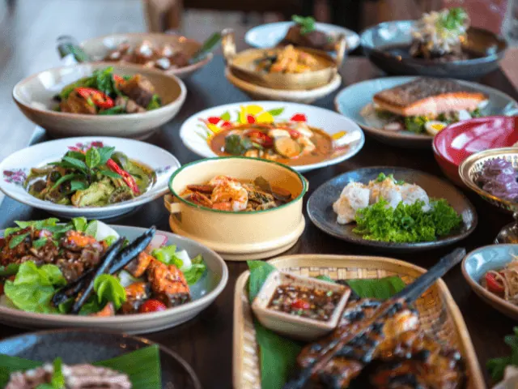
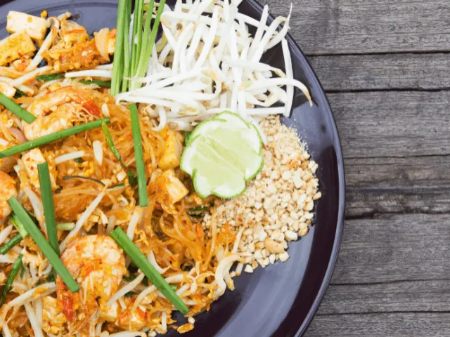

Thais eten in Nijmegen – Onze Top 3 Thaise restaurants
Gepubliceerd op 14 februari 2023, bijgewerkt op 20 oktober 2023
Onderdeel van de gids Restaurants in Nijmegen

Thais eten is door de jaren heen onder steeds meer mensen geliefd geworden. Populaire gerechten zoals Pad Thai en de verschillende romige curry’s, zijn tegenwoordig overal te vinden. Ons land kent veel heerlijke restaurants waar jij kunt genieten van de beste Thaise gerechten. Ook in de bruisende stad Nijmegen zijn er verschillende Thaise restaurants te vinden, de één nog lekkerder dan de ander. Om jou te helpen een goede keuze te maken, hebben we enkele restaurants onder de loep genomen.
Restaurant Siam Thai Palace is zonder twijfel één van de meest populaire Thaise restaurants in Nijmegen. Het Thaise eten is hier voortreffelijk en er is enorm veel keuze. Ook op de sfeer in het restaurant hebben wij niets aan te merken. Restaurant MIA is ook een sfeervolle en populaire plek om te genieten van de diverse Aziatische keukens.
Doe jij binnenkort een gezellig dagje Nijmegen, of woon je simpelweg in de buurt? Dan moet je onze lijst met de drie beste Thaise restaurants absoluut doornemen. Het zijn stuk voor stuk heerlijke eettentjes waar jij zonder twijfel een fantastische avond gaat beleven. In het onderstaande artikel duiken we dieper in op elk van deze restaurants. Van de uitgebreide menukaart tot de traditionele Thaise sfeer, alle aspecten worden in ogenschouw genomen. Laten we dus snel van start gaan.
Overzicht Thais restaurants in Nijmegen
De 3 beste Thaise restaurants in Nijmegen
Ben jij ook nieuwsgierig naar al het lekkers dat de Thaise keuken te bieden heeft? Dan is dit artikel speciaal voor jou. Wij hebben een top 3 samengesteld met daarin de allerbeste Thaise restaurants in Nijmegen. Wij weten zeker dat er ook voor jou een leuk restaurant tussen zit.
1. Siam Thai Palace restaurant Nijmegen
Onze nummer 1 is restaurant Siam Thai Palace. Dit Thaise restaurant is gevestigd in het centrum van Nijmegen, vlak tegenover het bekende Valkhofpark. Het betreft een sfeervol restaurant in Thaise stijl. Dit zorgt voor een unieke en complete beleving van al het lekkers en moois dat Thailand te bieden heeft.
De menukaart van restaurant Siam Thai Palace is enorm uitgebreid. Alle traditionele specialiteiten uit Thailand zijn hier zonder twijfel op terug te vinden. Zowel vegetariërs als vleeseters kunnen hier volop genieten. Van gefrituurde tofu tot heerlijk Thaise vis- en vleesgerechten. Uiteraard ontbreekt een heerlijk dessert ook niet op de uitgebreide menukaart.
De onderstaande kenmerken zijn onlosmakelijk verbonden met restaurant Siam Thai Palace in Nijmegen.
- Thais eten van hoge kwaliteit
- Kleurrijke gerechten
- Authentieke Thaise sfeer
- Veelzijdigheid – Er is voor ieder wat wils verkrijgbaar
- Uitermate vriendelijke bediening en een top chef!
Dit klinkt toch als muziek in de oren, vind je ook niet? Wanneer jij interesse hebt in de Thaise keuken, moet je restaurant Siam Thai Palace absoluut een kans geven. Wij weten zeker dat je hier geen spijt van zult krijgen.
2. BKK Thai Nijmegen
Een tweede populaire optie in hartje Nijmegen is restaurant BKK Thai. Je vindt dit veelzijdige restaurant in de gezellige Tweede Walstraat. Het is de ideale plek om neer te strijken na een dagje shoppen of cultuur opsnuiven in het bruisende Nijmegen.
Het betreft een knus restaurant met een gezellige sfeer. Ook kun je alle heerlijke gerechten van het menu thuis laten bezorgen. Je hoeft dus niet eens de deur uit om te genieten van alle Thaise specialiteiten die BKK Thai in huis heeft.
Naast een breed aanbod aan Thaise culinaire hoogstandjes, kun je hier ook genieten van een heerlijk koud Thais biertje. BKK is werkelijk waar van alle markten thuis. Er wordt uitsluitend gewerkt met de allerbeste ingrediënten om zodoende de lekkerste Thaise gerechten te kunnen creëren.
Lekker eten, een betaalbaar menu én vriendelijk personeel, wat wil je nog meer? Kom langs bij BKK Thai in het centrum van Nijmegen om Thailand op zijn best te beleven.

3. MIA (Made in Asia) Nijmegen
Het laatste restaurant op onze lijst is zeker niet de minste. Het betreft restaurant MIA in Nijmegen. Ook dit restaurant ligt op steenworp afstand van het gezellige oude stadscentrum. Na een dagje Nijmegen ontdekken, kun jij hier dus heerlijk neerstrijken voor een traditionele authentieke Thaise maaltijd.
Restaurant MIA is van alle markten thuis. Je vindt op de menukaart diverse Thaise gerechten, maar ook andere delen van de Aziatische keuken zijn sterk vertegenwoordigd. Klanten zijn dan ook zeer te spreken over de uitgebreide en diverse menukaart.
Naast de ruime keuze, zijn ook de onderstaande aspecten populair onder de gasten die bij MIA komen eten.
- Uitermate sfeervol restaurant
- Thaise gerechten van hoge kwaliteit
- Vriendelijk personeel
- Eenvoudig te bereiken locatie
Ben jij dus geïnteresseerd in de Thaise keuken, maar ben je ook niet vies van andere Aziatische hoogstandjes? Dan moet je zeker eens komen eten bij restaurant MIA in Nijmegen centrum.
